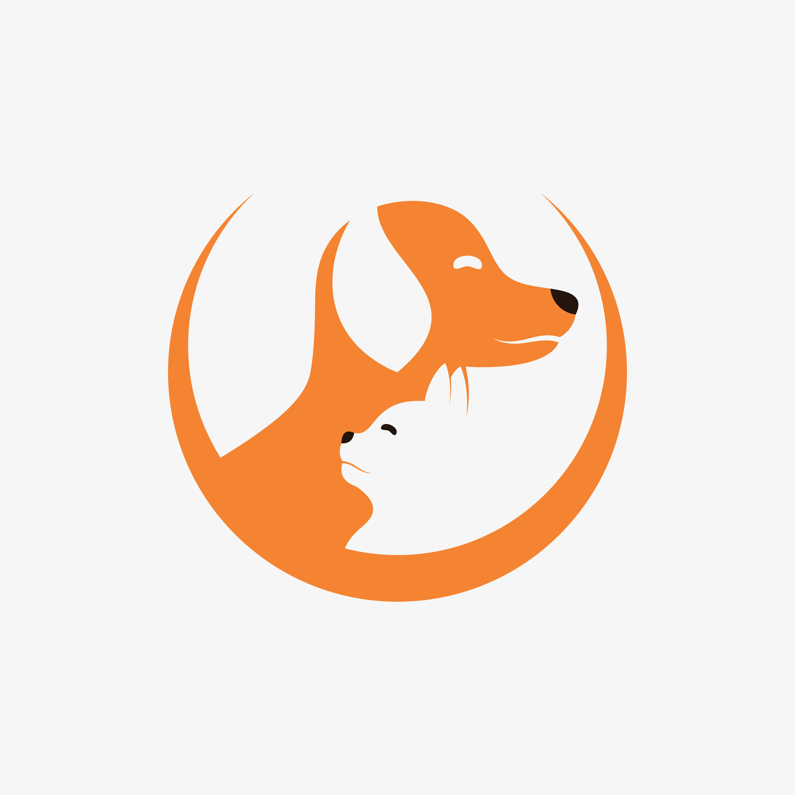

Conoce un poco sobre nuestra mini empresa para mascotas

Historia de Sparkle Veti: Cuidando a tus Mascotas con Brillo y Cariño
En un pequeño barrio lleno de jardines y calles llenas de risas de niños y ladridos de perros, nació Sparkle Veti, una empresa dedicada
a transformar el bienestar de las mascotas y mejorar su calidad de vida. La idea surgió cuando su fundadora, María Rodríguez,
una apasionada veterinaria con más de 15 años de experiencia, se dio cuenta de que,
aunque los dueños de mascotas estaban cada vez más interesados en cuidar y consentir a sus animales, había una brecha entre lo que
los veterinarios podían ofrecer y las necesidades emocionales y físicas de las mascotas.